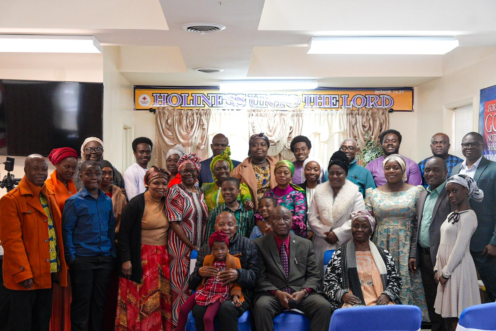

These groups are the church's main media outlet: weekly activities, service reminders, prayer points, event flyers, photos, audio messages, and important announcements all go out here first. Whether you've worshipped with us for years or you're visiting for the first time, there's a place for you.

All MembersOur main channel for the whole congregation: church-wide announcements, weekly service and meeting times, event flyers, photos, and recordings. Start here if you're not sure which group is for you.
Join on WhatsAppFor our Twi-speaking members, the same church media and updates plus announcements specific to the Twi assembly, shared in Twi. You're welcome to be in both groups.
Join on WhatsAppIf the links above don't work for you, you don't use WhatsApp, or you're new and haven't been added to a group, fill out this short form. Someone from the church will reach out and make sure you're included.
Not everything depends on WhatsApp. These are always open to everyone, no group membership needed.